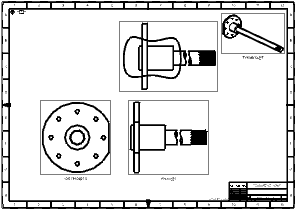
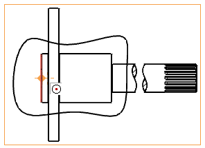
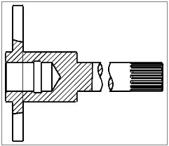

In the Part Navigator, select the View Break “1” check box to unsuppress the view break.

Choose Insert→View→Section→Break-out.
Click OK to close the Break-Out Section message.
Select the ORTHO@15 view from the Break-Out Section dialog box or from the graphics window.
Select the arc center shown below as the base point.

In the Break-Out Section dialog box, click Select Curves .
Select the studio spline, and then click Apply to create the break-out section view.

In the Break-Out Section dialog box, click Cancel.